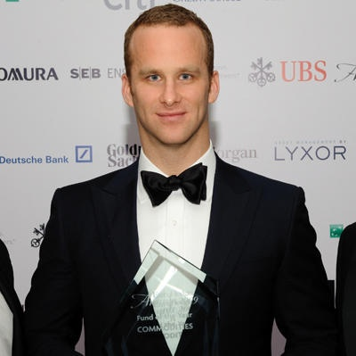

Andurand was born in the French city of Aix en Provence. At eight years old, he moved with his family to the French island of Réunion, off the African coast. He spent six years there before returning to Aix en Provence. At the age of seventeen he moved to the city of Toulouse to attend the Institut National des Sciences Appliquées (National Institute of Applied Sciences) At INSA he achieved an Msc in Applied Mathematics before moving to École des Hautes Études Commerciales de Paris (HEC School of Management in Paris), where he achieved an MSc. in International Finance.
A keen swimmer in his youth, Andurand was a member of the French National Junior Swimming Team in 1993 and 1994.
After graduation Andurand was recruited by Goldman Sachs to work as an oil trader at Sachs' commodities trading unit in Singapore.
After Goldman Sachs he joined Bank of America Singapore as a Principal in oil trading. He then joined Vitol in Singapore as a trading manager. Privately owned Vitol is the world’s largest oil trading company, shipping in excess of 200 million tons of crude oil per year. Andurand then moved to London in 2004 and was made a partner. He was rumoured to be one of the most successful traders in the company, earning him a bonus payment of $20 million at the end of one particularly successful year's trading.
In October 2007, Andurand co-founded the hedge-fund investment group BlueGold. He was the majority shareholder and Chief Investment Officer at BlueGold. The BlueGold Global Fund was then launched in February 2008 with $300 million assets under management. In June of that year, its returns were described by the New York Post as being of "eye-popping" and "monstrous" proportions.[5] Its peak in Assets Under Management reached $2.4 billion. Performance was 210% in 2008, 55% in 2009, 13% in 2010, and -34% in 2011. BlueGold was closed in April 2012, returning close to 99% of its assets under management within a month, after the founders decided to go their separate ways.
In February 2013, Pierre Andurand launched a new hedge fund: Andurand Capital.
As of September 2016, Andurand’s performance for the year was reported to be 8.3%, including an increase of 4.2% in August 2016. Andurand Capital manages $1.2bn in assets as of September 2016.
In 2013, the Andurand Commodities Fund finished the year as one of the best performing commodities hedge funds with a 25% return.In 2014, it generated a 38% return net of all fees by correctly forecasting the sharp decline in crude oil prices. The fund achieved a return of 47% for investors who transferred their money from BlueGold, whose investments are now back above the previous fund’s high water mark, which was honoured by Andurand Capital.
A martial arts fan, Andurand turned to kickboxing as a means to keep fit while working as an oil trader. He formed Glory World Series after rival series K-1 ran into financial difficulties and refused Andurand's offer of a buy-out.
In September 2016 Glory Sports International announced a Series B financing round, with Yao Capital acquiring a significant strategic stake in the company; Liberty Global also participated in the syndicate. Existing Glory shareholders, including Twin Focus Capital of Boston, also participated in the financing round.
In 2011, Andurand married the Russian model Yevgenia Slyusarenko in a ceremony staged at the Catherine Palace near St. Petersburg.